MÓDULO
FARMÁCIA
O objetivo deste módulo é fazer a entrega dos medicamentos nos postos de distribuição de medicamentos, permitindo o farmacêutico fazer a classificação dos medicamentos e parametrizar os Tipos de Receita.
Nesta opção tem-se acesso a todos os cadastros do Modulo Farmácia, como o cadastro de Medicamentos, Tipos de Receita e Classificação de Medicamentos. È importante deixa-los sempre bem atualizados.
Este cadastro consiste em vincular os itens do Módulo Materiais com os Medicamentos do Módulo Farmácia e fazer a classificação dos medicamentos, conforme o seu principio ativo, sendo esta somente as classificações analíticas do cadastro.
Medicamento: O código do medicamento será gerado automaticamente e corresponde ao código do item que está sendo incluído.
Materiais: Neste campo deve ser digitado o código do material que será vinculado ou clicar no link dos Materiais para pesquisar pelo seu nome.
Classificação:Neste campo deve ser digitado o código da classificação do medicamento ou clicar no link da Classificação para pesquisar pelo seu nome, esta pesquisa vai retornar apenas os registro Analítico da classificação.
Observação:Este campo é para o usuário digitar alguma observação sobre o medicamento. (Não obrigatório).
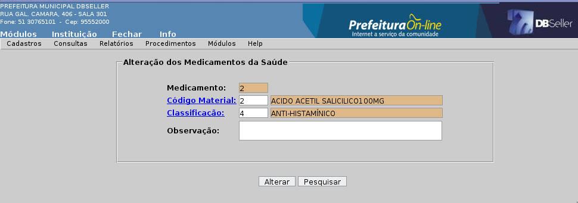Figura 1
Na alteração do cadastro de medicamento não pode ser alterado o item do material, caso o medicamento possua uma saída do estoque. O campo Classificação não possui nenhuma restrição, igualmente o de Observação.
Na exclusão não poderá ser excluído nenhum medicamento que possuir alguma movimentação no sistema.
Este cadastro consiste em configurar todos os tipos de receita que a farmácia pode receber na entrega dos medicamentos. O tipo de receita permite o farmacêutico configurar quais campos serão obrigatórios na distribuição dos medicamentos e quantas vias será o recibo de entrega do paciente.
Código: O código do tipo de receita será gerado automaticamente e corresponde ao código do item que está sendo incluído.
Descrição: Colocar o nome do tipo de receita para sua identificação, campo obrigatório.
Profissional: Este campo permite selecionar SIM para tornar o campo Profissional do procedimento Entrega de Medicamento obrigatório.
Posologia: Este campo permite selecionar SIM para tornar o campo Posologia do procedimento Entrega de Medicamento obrigatório.
Requisitante:Este campo permite selecionar SIM para tornar os campos do requisitante do procedimento Entrega de Medicamento obrigatório. Neste caso o CGM do requisitante, que deve estar com o endereço e identidade preenchidos.
Número da Receita:Este campo permite selecionar SIM para tornar o campo Número da Receita do procedimento Entrega de Medicamento obrigatório.
Vias do Recibo: Colocar a quantidade de vias do recibo de entrega.
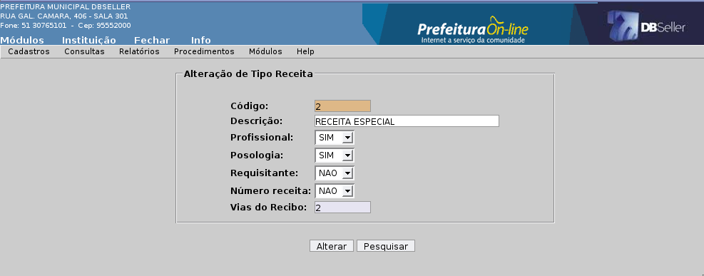Figura 2
Na alteração do cadastro de tipo de receita pode ser alterado qualquer um dos parâmetros que estão no cadastro.
Na exclusão não poderá ser excluído nenhum tipo de receita que possuir alguma saída de medicamento do sistema.
Código: O código de classificação será gerado automaticamente e corresponde ao código do item que está sendo incluído.
Máscara: Este campo busca automáticamente o estrutural cadastrado nos parâmetros do Módulo Farmácia.
Classificação: Colocar o código estrutural da classificação do medicamento. Neste caso, se a máscara for (00.00), então a primeira classificação sintética seria (01.00) . O sistema não permite cadastrar um análitico que não possua uma classificação sintética.
Tipo: Este campo deve ser selecionado o tipo de acordo com o código da classificação acima, caso o código for 01.00 será do tipo sintético, mas se for 01.04 é analitico.
Descrição: Colocar o nome da classificação para sua identificação, campo obrigatório.
Observação: Este campo é para o usuário digitar alguma observação sobre a classificação. (Não obrigatório).
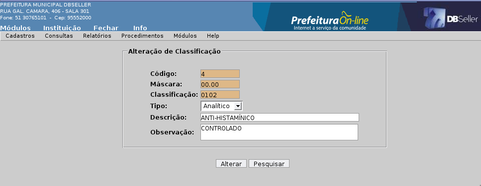Figura 3
Na alteração do cadastro de classificação não pode ser alterado o estrutural se existir um medicamento vinculado a essa classificação. Caso não esteja vinculado pode ser alterado sua estrutura.
Na exclusão não poderá ser excluído nenhuma classificação que possuir alguma vinculada ao cadastro de medicamento.
Código: O código de programa será gerado automaticamente e corresponde ao código do item que está sendo incluído.
Descrição: Colocar o nome do programa para sua identificação, campo obrigatório.
Tipo: Este campo identifica a que esfera da administração este programa pertence, como: (Federal, Estadual, Municipal, Particular e Outros).
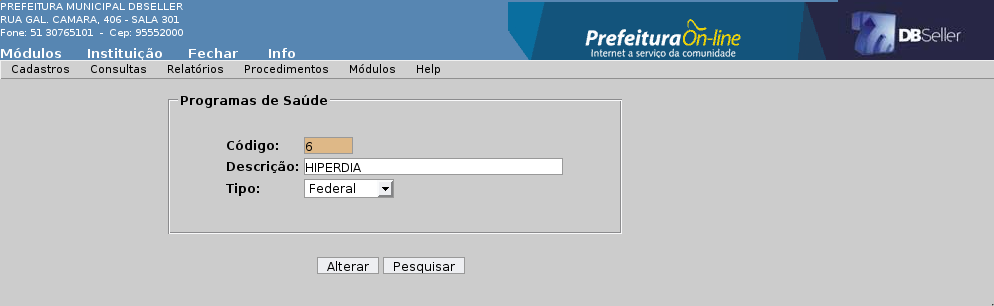Figura 4
Na exclusão não poderá ser excluído nenhum programa que possui vinculo com o cadastro de controlados.
Permite consultar por paciente as suas retiradas de medicamento da farmácia por uma determinado período. Nesta consulta pode ser tirado dois relatórios (Sintético e Analítico) de suas retiradas, assim fornecendo dados para o controle das retiradas.
Outra funcionalidade é que o usuário pode clicar no registro da consulta na tela, assim abre outra tela com os medicamentos retirados e um botão para reemitir o recibo de retirada para o paciente.
Campos
Consulta: Neste campo é selecionado o tipo de pesquisa, a única disponível nesta versão é a de (Retirada) .
Período: Colocar a data inicial e final do período que se quer pesquisar, caso o usuário não selecione nenhuma data o sistema busca todos os registro de retirada para o CGS selecionado.
CGS: Colocar o código do CGS (Paciente) ou clicar no link para pesquisar o nome do paciente.
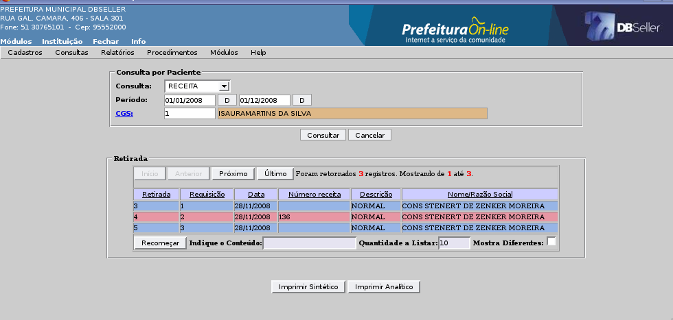Figura 5
Layout do Relatório Sintético
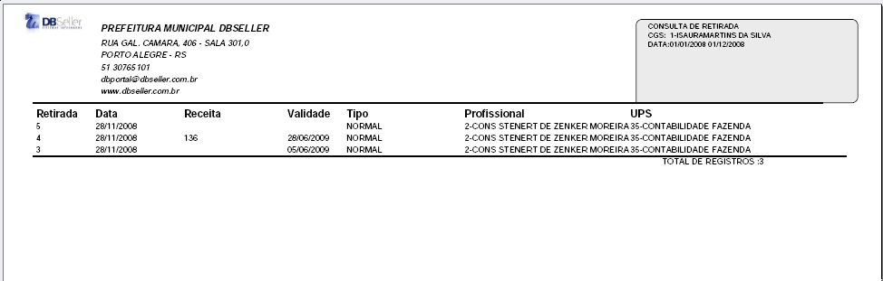Figura 6
Layout do Relatório Analítico
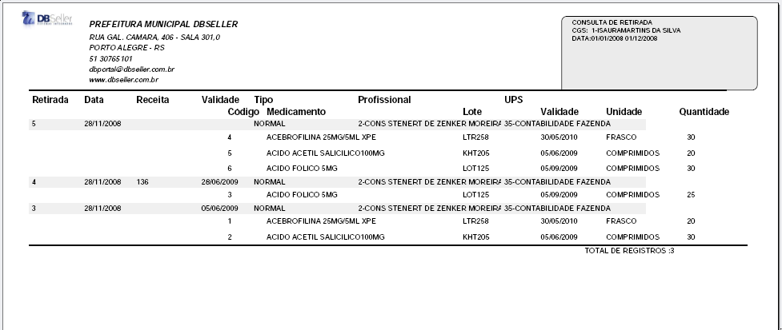Figura 7
Tela de Consulta dos Medicamentos
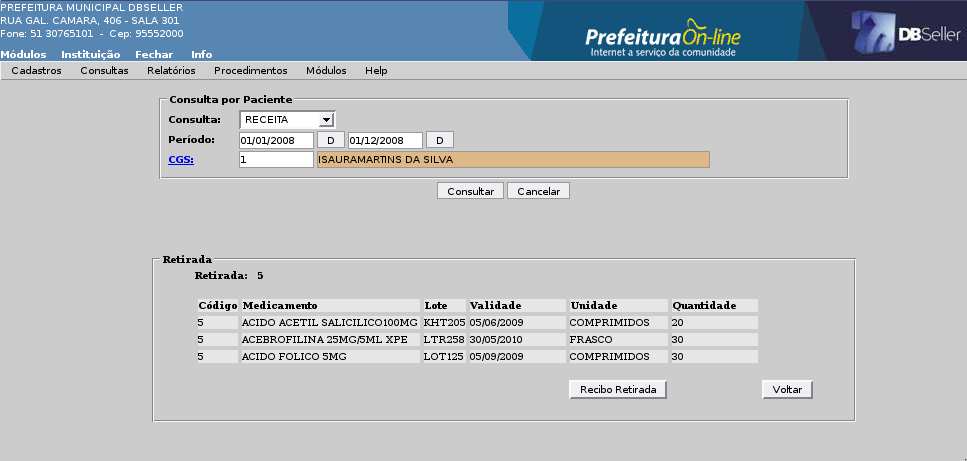Figura 8
Este menu possui relatórios referente aos Medicamentos do sistema, envolvendo a parte cadastral e de estoque.
Este relatório imprime o cadastro de Medicamentos, e permite os filtros de (Quebra e Ordem).
Quebra: O relatório permite quebra por (Classificação ou nenhuma).
Ordem: Permite ordenar por ordem (Alfabética e numérica).
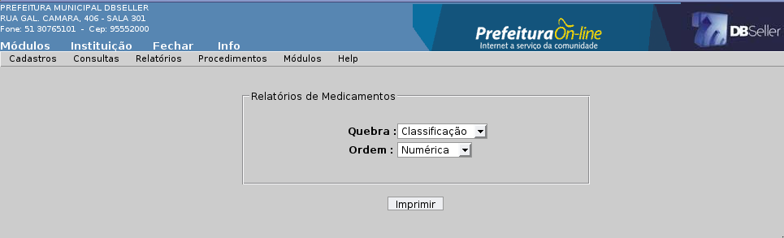Figura 9
Layout do Relatório sem Quebra por Classificação
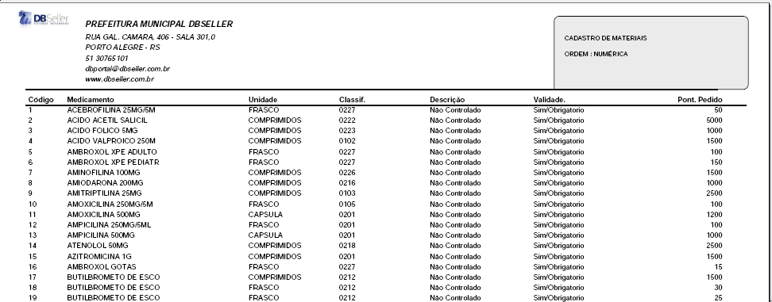Figura 10
Este relatório imprime a posição atual do estoque, por depósito ou de todos os medicamentos do sistema, permitindo o farmacêutico ter uma posição da quantidade e do valor em estoque.
Depósito: Este filtro permite selecionar o relatório por depósito.
Estoque Zerado: Este filtro permite selecionar os medicamentos com saldo ou zerado.
Tipo: Este filtro permite tirar um relatório sintético do estoque.
Quebra: O relatório permite quebra por (Classificação ou nenhuma).
Ordem: Permite ordenar por ordem (Alfabética e numérica).
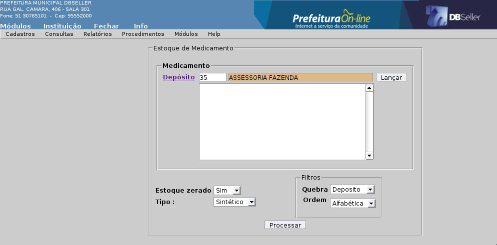Figura 11
Layout do Relatório sem Quebra por Classificação
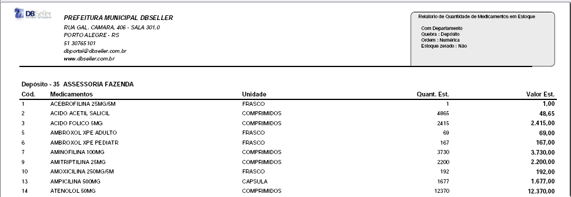Figura 12
Este relatório imprime a distribuição anual de medicamento por mês, permitindo ter uma visão global do consumo de medicamento na Farmácia.
Depósito: Este filtro permite selecionar o relatório por depósito.
Estoque Zerado: Este filtro permite selecionar os medicamentos com saldo ou zerado.
Quebra: O relatório permite quebra por (Classificação ou nenhuma).
Ordem: Permite ordenar por ordem (Alfabética e numérica).
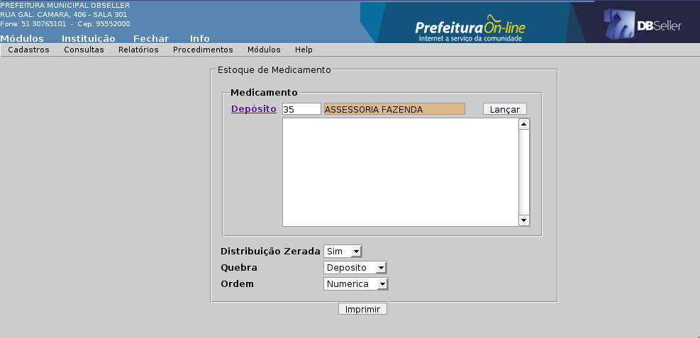Figura 13
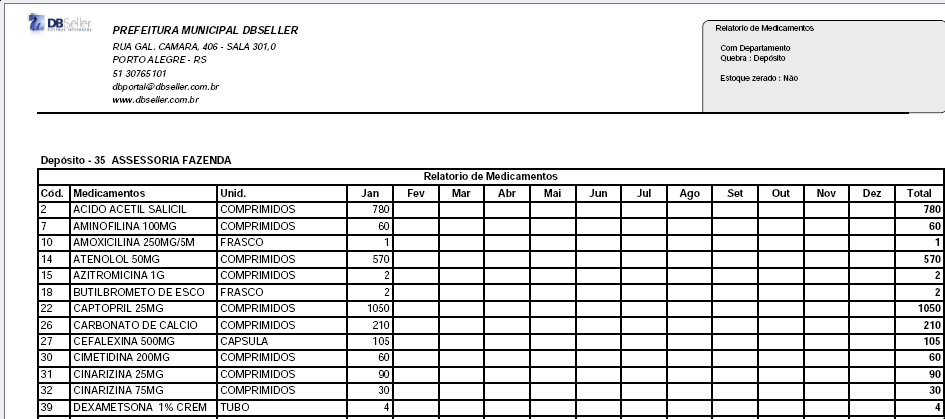Figura 14
Todas as rotinas necessárias para o controle e distribuição de medicamento da Farmácia Municipal, é os procedimentos Entrega de Medicamento e Parâmetros.
Nesta opção é realizada a entrega de medicamentos para os pacientes pela a atendente ou farmacêutica do posto. Esta rotina consulta o saldo dos medicamentos diretamente no Módulo Materiais.
ABA Retirada de Medicamentos
Unidade: Busca o código e a descrição do departamento do usuário logado.
CGS: Colocar o código do CGS (Paciente) ou clicar no link para pesquisar o nome do paciente.
Receita DBPortal: Selecionar se a receita foi gerada pelo sistema, neste caso, se não foi gerada pelo sistema o usuário deve preencher os dados da receita. Se foi gerara pelo sistema, ele busca o código da receita que deve ser atendido pelo atendente (Solicitação).
Tipo de Receita: Selecionar o tipo de receita referente a entrega do medicamento para os pacientes. Ao selecionar um tipo que o parâmetro está com Requisitante obrigatório o sistema abre os campos referente ao requisitante.
Receita: Colocar o número da receita caso ela seja manual e possuir uma numeração.
Validade: Colocar a validade da receita médica.
Profissional: Colocar o código do profissional responsável pela receita médica ou clicar no link do Profissional para pesquisar pelo nome.
Medicamento: Colocar o código do medicamento ou clicar no link Medicamento e pesquisar pelo nome. Depois de selecionado o sistema mostrará o saldo do medicamento.
Quantidade: Lançar a quantidade do item que se quer retirar, neste caso, somente a quantidade disponível no campo saldo.
Ver Lote: Este campo só é visualizado quando o medicamento está vinculando a um material que controla validade do item. Caso o usuário não olhe o lote, o sistema retira a quantidade do lote que vence primeiro. Se clicar em ver lote, o usuário pode escolher qual lote quer ser retirado.
Saldo: Neste campo o usuário pode visualizar o saldo do medicamento em estoque.
Posologia: Colocar a posologia prescrita pelo médico na receita.
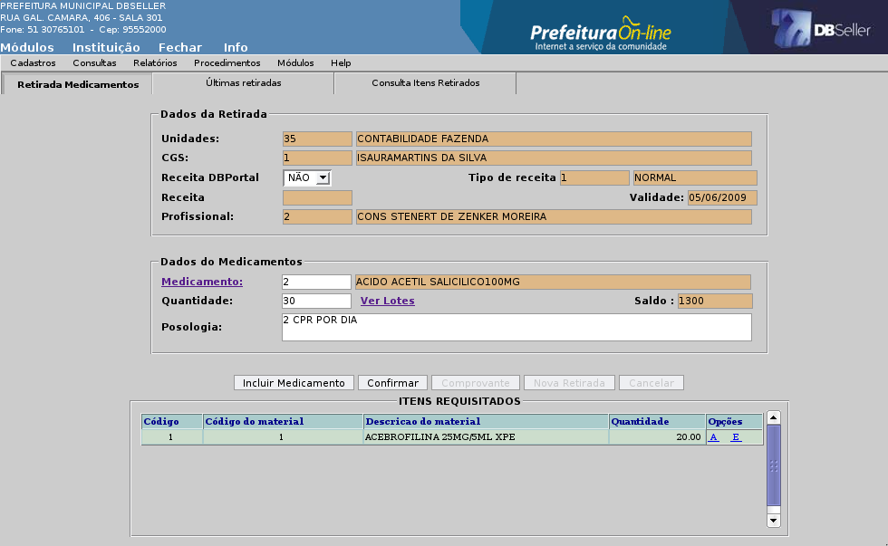Figura 15
Layout do recibo de entrega de medicamento.
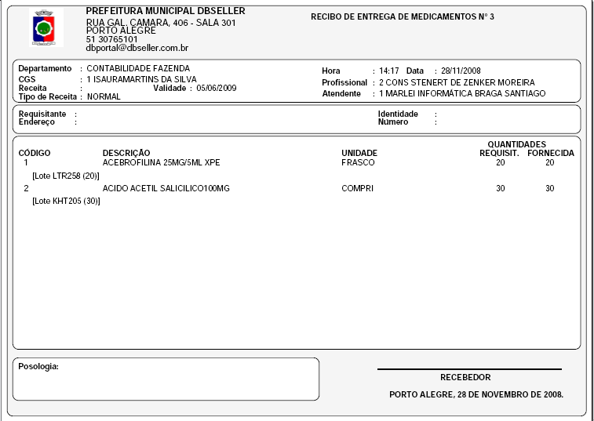Figura 16
ABA Ultimas Retiradas
Esta ABA somente será habilitada se o paciente que esta retirando o medicamento possuir um histórico de retiradas anteriores pelo sistema, para a consulta do atendente e melhor controle na distribuição.
No botão Consultar Medicamento mostra os itens retirados nessa retirada, mostrando na ABA Consulta Itens Retirados.
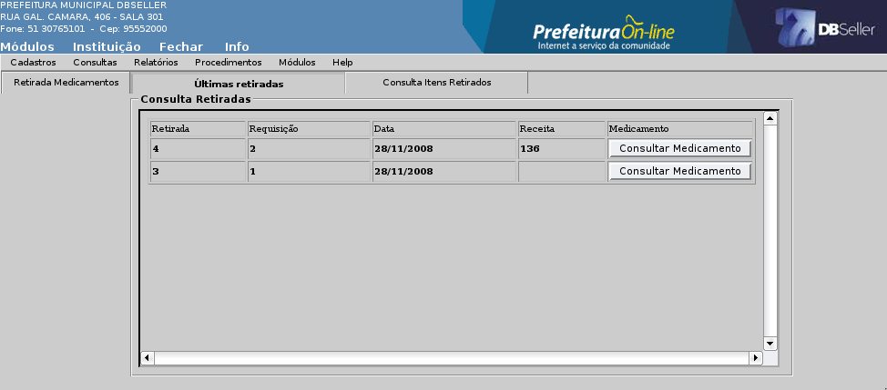Figura 17
ABA Consulta Itens Retirados
Esta ABA lista os medicamentos retirados na retirada consultada pelo usuário. Para voltar a ABA Ultimas Retiradas o usuário deve clicar em OK.
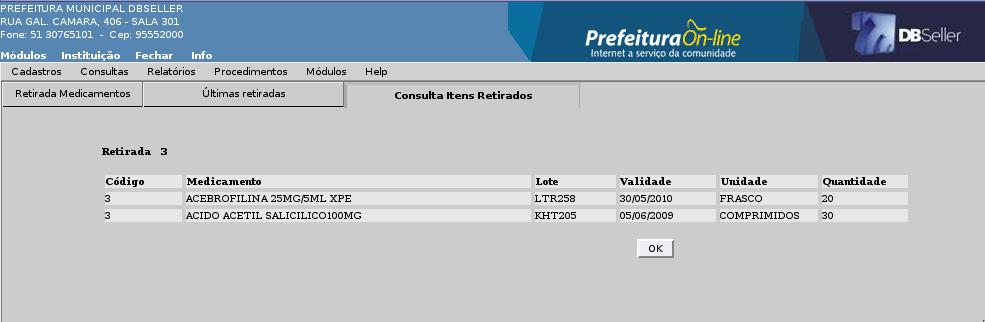Figura 18
Este procedimento realiza o cadastro dos medicamentos controlados por paciente, permitindo ao administrador controlar os ciclos de entrega por medicamento, cada um é controlado separadamente na hora da Entrega do Medicamento.
Esta rotina faz toda validação na Entrega do Medicamento, pois verifica o saldo dos medicamentos dentro de uma freqüência de retiradas do paciente e não diretamente no saldo do medicamento.
Campos
CGS: Colocar o código do CGS (Paciente) ou clicar no link para pesquisar o nome.
Medicamento: Colocar o código do Medicamento ou clicar no link para pesquisar o nome.
Quantidade: Neste campo deve ser preenchido com a quantidade de medicamento que o paciente retira dentro de uma freqüência.
Freqüência: Neste campo deve ser preenchido o período de retirada do medicamento, neste caso, deve ser em dias.
Margem: Neste campo deve ser preenchido os dias de tolerância de cada medicamento.
Programa: Colocar o programa em que o medicamento controlado pertence.
Observação: Colocar as observações que serão impressas na Carteirinha do paciente.
Validade
Inicio: Data de inicio do controle de retirada do medicamento.
Fim: Data de fim do controle de retirada do medicamento.
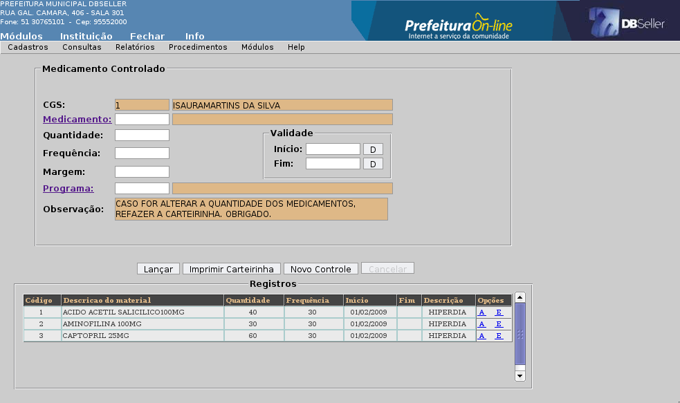Figura 19
Imprimir Carteirinha: Este botão permite emitir uma carteirinha por CGS (Paciente), Cada carteirinha vale por exercício, tendo que ser renovada por ano.
Modelo da Carteirinha de Medicamento
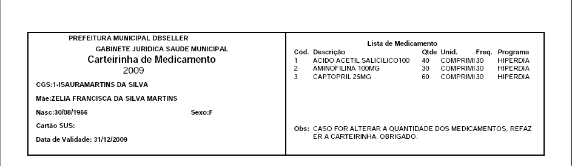Figura 20
Nesta opção é configurado os parâmetros para o módulo de Farmácia no sistema.
Campos
Código: O código de classificação será gerado automaticamente e corresponde ao código do item que está sendo incluído.
Estrutura: Este campo busca a estrutura dos níveis cadastrados no Módulo Configurações.
Descrição: Colocar o nome da estrutura nos parâmetros.
Digitação Medicamentos: Selecionar a SIM para digitação manual dos medicamentos em uma receita (solicitação) feita pelo DBPortal.
Med. Controlado: Este parâmetro controla a distribuição dos Medicamentos Controlados por paciente. Permite o administrador escolher 3 (três) opções:
Não Notifica: Nesta opção o sistema executa uma distribuição de medicamento normal, sem olhar o cadastro de Medicamentos Controlados.
Notifica e Bloqueia: Nesta opção o sistema ao fazer um distribuição de um medicamento controlado, ele verifica se o paciente possui saldo disponível para a retirada em um determinado período e bloqueia a retirada caso ele não possua.
Notifica e Não Bloqueia: Nesta opção o sistema ao fazer um distribuição de um medicamento controlado, ele verifica se o paciente possui saldo disponível para a retirada em um determinado período mas não bloqueia a retirada.
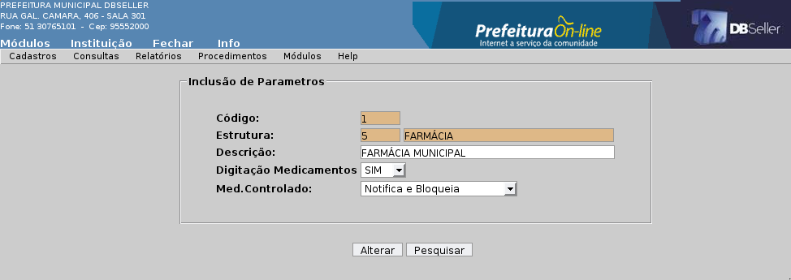Figura 12
|
DBSeller Serviços de Informática Ltda. – www.dbseller.com.br Rua General Câmara, 406/301 - Porto Alegre/RS - Fone: (51) 3076-5101 |
Versão – 2.1.96 |